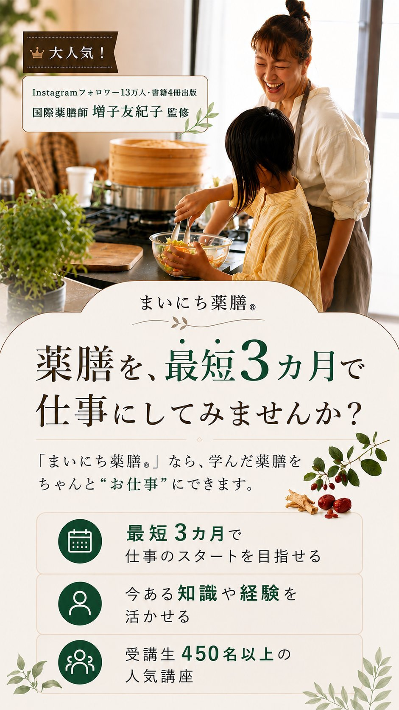
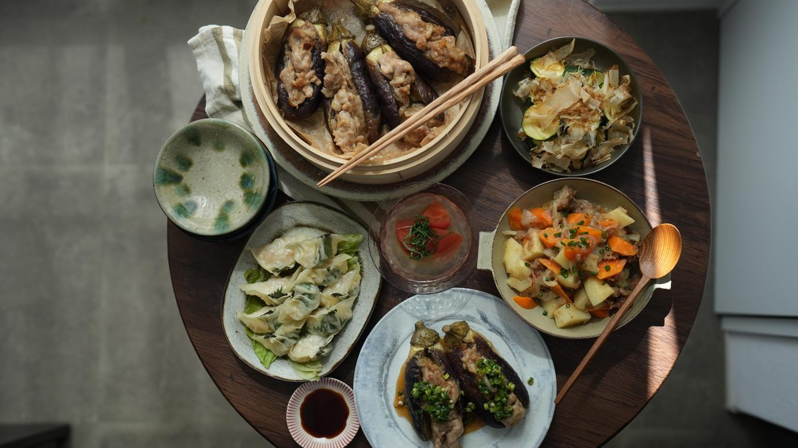
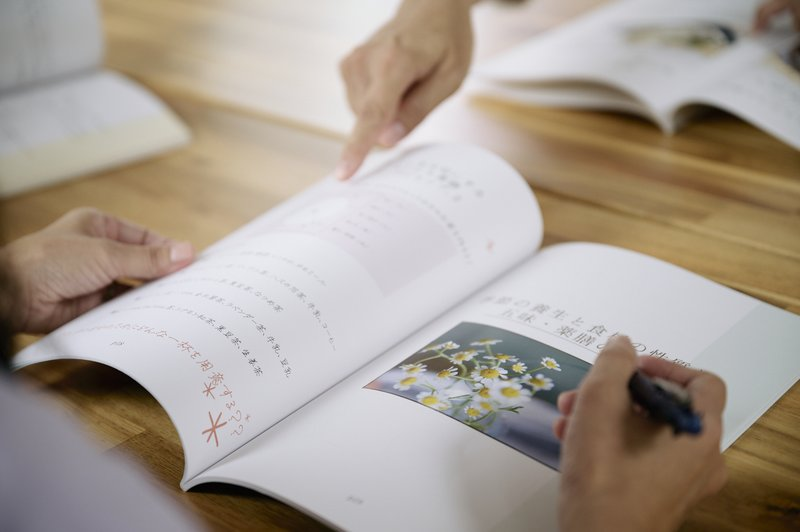
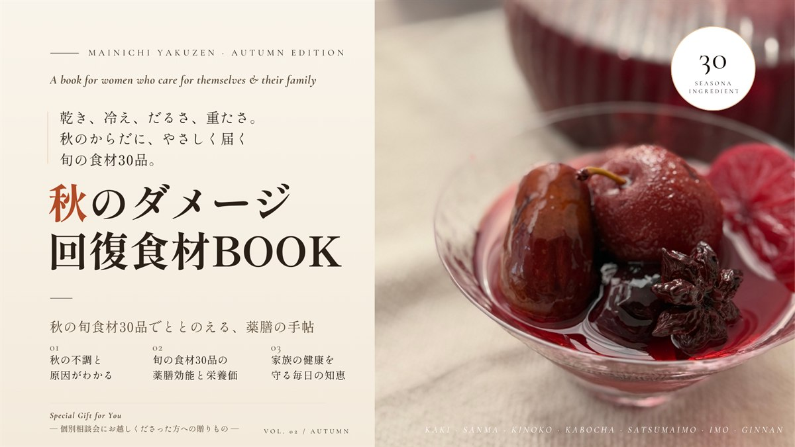
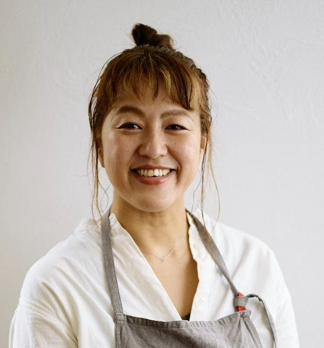

FV画像をここに配置
もしひとつでも当てはまったなら、
このセミナーはきっとお役に立てたと思います。
薬膳に興味を持つ人、
体を整える食事を学びたい人、
家族のために取り入れたい人が、
どんどん増えているんです。
でもその一方で、
薬膳に興味がある人は増えているのに、
それをわかりやすく伝えられる人、
日常に落とし込んで教えられる人は
まだまだ足りていません。
そんな方のために生まれたのが、
増子友紀子監修
毎日の暮らしの中で使える薬膳を学びながら、
自分の体と心の変化を感じ、
さらにそれをお仕事にできる。
「学んだけど活かせていなかった方」が、
仕事への一歩を踏み出しやすいのです。

— DAILY YAKUZEN TABLE —

これら3つを
2本の動画セミナーで
お届けしています
「私にもできるのかな？」
「何から始めればいいのかな？」
そんなモヤモヤが、"具体的な一歩"に変わります。

まずは個別相談会で、
薬膳を仕事にする第一歩を、
ここから始めてください。
CONSULTATION | FREE

料理人歴20年。
フランス料理店で10年修行後、東京・自由が丘にて「リストランテ ヴィコレット」のオーナーシェフに。
結婚・出産を機に、「毎日のごはんで体をケアする」大切さを実感し、2016年より国際薬膳師として活動を開始。
介護と育児を通して、"毎日の食と暮らしから、今の自分を大切に生きていく"をモットーに、日々の食卓から元気になる薬膳のヒントを届けている。
毎月のオンライン料理教室「おまもりレシピ」や、薬膳と共に"自分を大切にする暮らし"を楽しむオンラインコミュニティ「こしらえごと.Lab」を主宰。
実践しながら薬膳を学べる「まいにち薬膳®」講座は、自宅講座を含め受講者数のべ6,500人を超える。
料理の作り方だけでなく、日常の出来事を紐解きながら薬膳を伝えるスタイルが好評で、暮らしを豊かにするヒントを広く発信。Instagramのフォロワーは現在131,000人以上。
薬膳を仕事にする
第一歩を、ここから
CONSULTATION | FREE